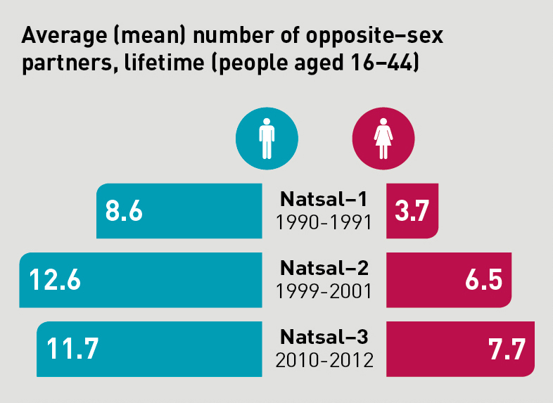
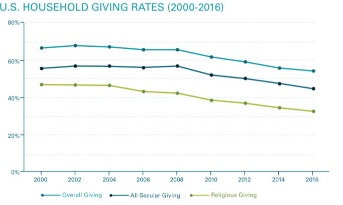
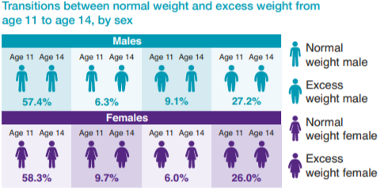
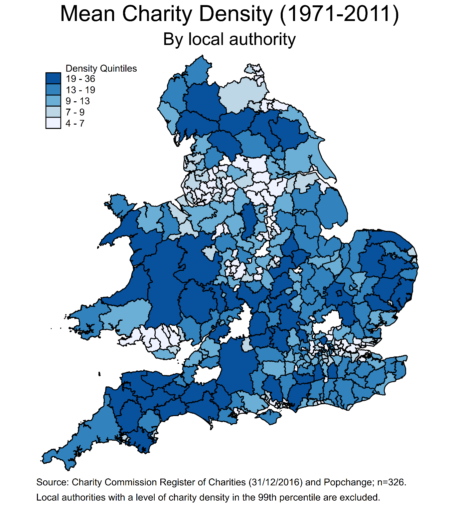
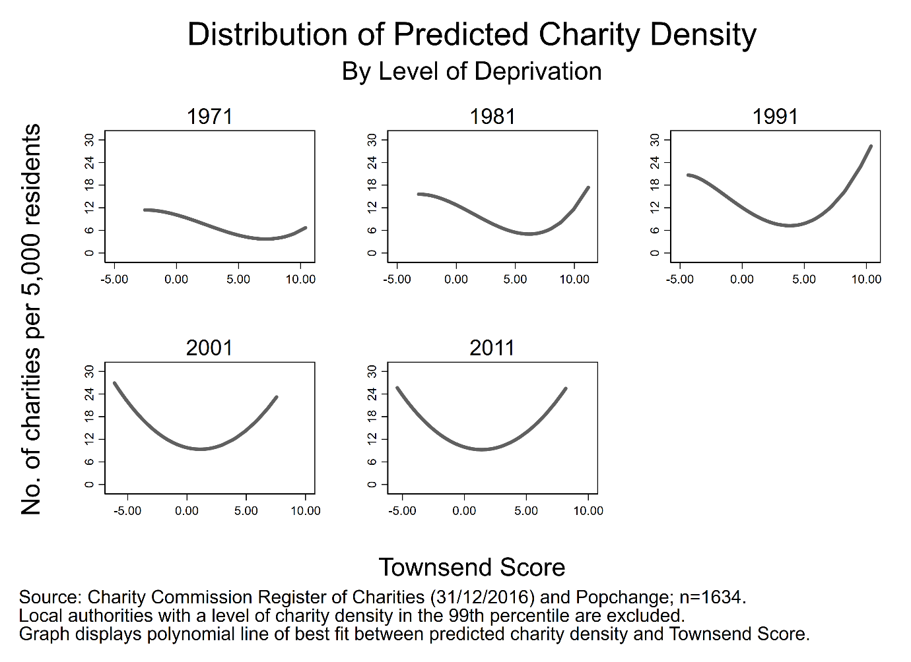

Introduction to Longitudinal Data¶
This section draws heavily on the work of Professor Vernon Gayle: Longitudinal Data Analysis for Social Scientists
What are longitudinal data?¶
At its simplest, longitudinal data contain a temporal dimension. This may be as simple as the data set containing variables that define the beginning and end of a social process (e.g., how long did somebody remain unemployed?). More often when we speak of longitudinal data we refer to data sets containing multiple observations of the same individuals.
Types of longitudinal study designs¶
Repeated cross-sectional studies - repeat samples of the same population over time:
National Surveys of Sexual Attitudes and Lifestyles (NATSAL)
British Social Attitudes Survey
Repeated cross-sectional studies allow analysis of change over time at the aggregate / macro level. For example, the mean number of opposite-sex sexual partners has increased over time in the UK for both men and women:
Figure 1.1.

Credit: Wellcome Trust/Paulo Estriga
Panel study - groups of entities are repeatedly studied over time:
UK Household Longitudinal Study (UKHLS)
Panel Study of Income Dynamics (PSID)
English Longitudinal Study of Aging (ELSA)
Panel studies collect data on the same respondents over time, and thus are known as repeated contacts data. For example, PSID has a module examining charitable giving of US households since 2000; this information is collected biennially and allows us to understand how the same households alter their giving behaviour over time (see figure 3.2 below).
Figure 1.2

Credit: Changes to the Giving Landscape
Cohort study - following a particular group of entities over time:
Millennium Cohort Study
Growing Up in Scotland
Whitehall Study II
The Millennium Cohort Study is a multi-wave survey of almost 20,000 children born in the UK during 2000/01, and is a representative sample of all children born during this period (Rafferty et al., 2015). It collects data at different periods (waves) of the children’s lives, thus providing longitudinal information on the development and life histories of these children.
Figure 1.3.

Credit: Child overweight and obesity: Initial findings from the Millennium Cohort Study Age 14 Survey
Why use longitudinal data?¶
UK has an unparalleled collection of longitudinal data resources.
These resources are critical for analysing social change (and social stability).
However they are costly to collect, clean and share, therefore strong justification needed.
Research questions¶
For many social science research projects cross-sectional data will be sufficient.
For example, if we are interested in understanding regional inequalities, it is sufficient to take a cross-section of data for these regions (e.g., a single census year) and describe variation in some measure of inequality. One of my recent research projects examined the distribution of charities across local authorities in England and Wales:
Figure 1.4.

The map displays the mean number of charities per 5000 residents across 326 local authorities in England and Wales. In essence I combined five census years to produce a cross-section of charity density between 1971 and 2011; that is I ignored the longitudinal component of my data and focused instead on making comparisons between local authorities.
Most social research projects can be improved by the analysis of longitudinal data.
Figure 1.5.

Figure 3.5 presents the temporal variation in the association between charity density and the level of deprivation in a local authority. Not only can we make comparisons between local authorities in a given year, we can now examine change over time, adding much more detail to our understanding of the relationship between density and deprivation.
Some research questions require longitudinal data.
Figure 1.6.

Figure 3.3 displays the results of a change score model that links changes in the values of a set of explanatory variables to changes in the values of the outcome. For example, a local authority becoming more deprived between census years is associated with a small increase in charity density. Such an analysis is not possible if we did not have data on the same local authorities at multiple time periods.
Research questions that require longitudinal data:
Flows into and out of poverty.
The effects of family migration on the woman’s subsequent employment activities.
The impact of Covid-19 on long-term health outcomes of individuals.
Evaluating policy, health, educational interventions.
Methodological benefits¶
Micro-level social processes
Repeated cross-sectional data can reveal macro-level trends and patterns of substantive interest but mask micro-level change. For example, repeated cross-sectional analysis of the British Household Panel Survey (precursor to Understanding Society) showed that poverty rates stabilised in the 1990s. However longitudinal analysis uncovered substantial turnover / churn in terms of which individuals remained in or exited poverty (the poor are not always poor!).
In my own research area, cross-sectional analysis of the Scottish Household Survey reveals the proportion of individuals volunteering has remained stable between 2007-2017 (Volunteer Scotland, 2019). However this pattern masks the substantial micro-level variation in volunteering behaviour: that is, it is not the same individuals volunteering every year, with people dipping in and out of this activity throughout the lifecourse.
Temporal ordering of events
Longitudinal data give us a better sense of the timing of events and hence the direction of influence. Remember that a necessary (but insufficient) condition for causal analysis is the appropriate temporal ordering of the cause and effect: X cannot cause Y if it does not occur before Y.
Understanding — and having the ability to identify — the temporal ordering of events helps to address a pervading issue in quantitative social science analysis: simultaneity bias. For example, it is difficult to untangle whether poor health causes unemployment, unemployment causes poor health (or both) without some form of longitudinal data.
Improving control for residual heterogeneity
Now we arrive at one of the major methodological appeals of longitudinal data: the ability to control for residual heterogeneity. As Gayle (2018) concisely states:
The possibility of substantial variation between similar individuals due to unmeasured, and possibly immeasurable, variables is known as ‘residual heterogeneity’.
You may have heard residual heterogeneity referred to as omitted variable bias or unobserved hetereogeneity. We’ll spend much more time on this benefit in the next section.
Improving control for state dependence
Longitudinal data provide important information on the initial or current state an entity is in, and the trajectory of said entity across different or the same states over time. As Nobel Prize winner J.J. Heckman summarises:
A frequently notes empirical regularity in the analysis of employment data is that those who were unemployed in the past or have worked in the past are more likely to be unemployed (or working) in the future.
In essence, much of human behaviour is influenced by previous behaviour and outcomes. Think back to the example we showed from the Millennium Cohort Study: both boys and girls were most likely to remain at the same weight (whether normal or excess) at age 14 as they were at age 11.
A note of caution¶
Longitudinal data are not a panacea:
For missing data
For measurement error
For lack of sample representativeness
For poorly specified statistical models
Etc
See the excellent summaries of the strengths and weaknesses of longitudinal data produced by CLOSER.
In summary¶
Longitudinal data enhance our ability to investigate complicated processes in the social world!
What does longitudinal data look like?¶
Let’s get our hands dirty working with some real-world longitudinal data: strictly speaking I’ll get my hands dirty as the data set we’re using has some restrictions on sharing. We will explore a data set containing a representative sample of UK charities: a version of this data set is available through the UK Data Service: SN 853257
First, let’s start with a simple, fabricated example of a longitudinal data set.
import delimited using "../data/lda-simple-example-2020-08-28.csv", clear varn(1)
l
(5 vars, 20 obs)
+--------------------------------------+
| pid year sex age income |
|--------------------------------------|
1. | 10001 2015 male 22 20000 |
2. | 10001 2016 male 23 20000 |
3. | 10001 2017 male 24 22000 |
4. | 10001 2018 male 25 24000 |
5. | 10002 2015 female 45 29000 |
|--------------------------------------|
6. | 10002 2016 female 46 29000 |
7. | 10002 2017 female 47 29000 |
8. | 10002 2018 female 48 29500 |
9. | 10003 2015 female 31 41500 |
10. | 10003 2016 female 32 42400 |
|--------------------------------------|
11. | 10003 2017 female 33 43800 |
12. | 10003 2018 female 34 45000 |
13. | 10004 2015 male 65 25000 |
14. | 10004 2016 male 66 10000 |
15. | 10004 2017 male 67 10000 |
|--------------------------------------|
16. | 10004 2018 male 68 10000 |
17. | 10005 2015 female 18 14000 |
18. | 10005 2016 female 19 15000 |
19. | 10005 2017 female 20 15000 |
20. | 10005 2018 female 21 18000 |
+--------------------------------------+
Here we have five individuals (units) observed across four years (time periods), with three variables capturing attributes in each year (sex, age, income).
This is an example of a balanced panel: the same number of observations is captured for each unit.
Now let’s look at a different example:
import delimited using "../data/lda-simple-example-ub-2020-08-28.csv", clear varn(1)
l
(5 vars, 16 obs)
+--------------------------------------+
| pid year sex age income |
|--------------------------------------|
1. | 10001 2015 male 22 20000 |
2. | 10001 2016 male 23 20000 |
3. | 10001 2017 male 24 22000 |
4. | 10001 2018 male 25 24000 |
5. | 10002 2015 female 45 29000 |
|--------------------------------------|
6. | 10002 2016 female 46 29000 |
7. | 10003 2015 female 31 41500 |
8. | 10003 2016 female 32 42400 |
9. | 10003 2017 female 33 43800 |
10. | 10004 2015 male 65 25000 |
|--------------------------------------|
11. | 10004 2016 male 66 10000 |
12. | 10004 2017 male 67 10000 |
13. | 10004 2018 male 68 10000 |
14. | 10005 2015 female 18 14000 |
15. | 10005 2016 female 19 15000 |
|--------------------------------------|
16. | 10005 2017 female 20 15000 |
+--------------------------------------+
Here we have the same units and time span but this time there are gaps within units: individual 10002 is only observed twice, and 10003 and 10005 three times.
This is an example of an unbalanced panel: the same number of observations is not captured for each unit.
Working with a balanced panel is preferrable for a number of reasons, which we’ll explore in due course. However the methods of analysis we will cover apply to unbalanced panels also (Mehmetoglu & Jakobsen, 2016).
The classic panel consists of a large number of units of analysis (i) observed over a small number of periods (t).
Charity data¶
use "../data/charity-panel-2020-09-10.dta", clear
desc
(Contains annual accounts of charities in E&W for financial years 2006-2017)
Contains data from ../data/charity-panel-2020-09-10.dta
obs: 68,818 Contains annual accounts of
charities in E&W for financial
years 2006-2017
vars: 31 9 Sep 2020 08:41
size: 8,326,978 (_dta has notes)
--------------------------------------------------------------------------------
storage display value
variable name type format label variable label
--------------------------------------------------------------------------------
regno long %12.0g Charity number (unique id)
fin_year byte %8.0g fin_year Financial year
etotal double %12.0g Total expenditure
itotal double %12.0g Total income
aob_classified str19 %19s Geographical scale of activity
i.e. local, national
sampling_strata byte %12.0g sampling_strata_lab
Income categories used to sample
organisations
large_samplin~a byte %12.0g large_sampling_strata_lab
Income categories used to sample
large organisations (£500k+)
orgsize byte %12.0g orgsize_lab
Size of charity - in categories of
total annual gross income
orgsize_large byte %12.0g orgsize_large_lab
Organisation size by income bands,
for large charities (> £500k)
orgsize_alt byte %13.0g orgsize_alt_lab
Organisation size by income bands,
alternative banding
fundraised float %9.0g Income derived from donations from
individuals
ind_fees float %9.0g Income derived from fees for
charitable activities from
individuals
govern float %9.0g Income derived from government
grants or contracts
volsector float %9.0g Income derived from voluntary
sector grants or contracts
internal float %9.0g Income derived from investments
and trading subsidiaries
business_other float %9.0g Income derived from other sources
e.g. business sector
fundraised_sh~e float %9.0g Share of income derived from
donations from individuals
business_othe~e float %9.0g Share of income derived from other
sources e.g. business sector
internal_share float %9.0g Share of income derived from
investments and trading
subsidiaries
volsector_share float %9.0g Share of income derived from
voluntary sector grants or
contracts
govern_share float %9.0g Share of income derived from
government grants or contracts
ind_fees_share float %9.0g Share of income derived from fees
for charitable activities from
individuals
nsources byte %9.0g Number of income sources where
income >= £1,000
inc_diverse float %9.0g Index of revenue diversification:
0 (less diversified) to 1 (more
diversified)
maxyear byte %9.0g Most recent year charity appears
in the dataset
orgage int %9.0g Age of charity - in years
linc float %9.0g Total income (log)
genchar float %9.0g General charity
socser float %9.0g Social service charity
west float %9.0g Charity registered in Westminster
localc float %9.0g Local charity
--------------------------------------------------------------------------------
Sorted by: regno
Let’s perform a couple of quick tasks in order to get familiar with the data.
First, we need to tell Stata we are dealing with panel data, as this allows us to access some time-series operators that are useful:
xtset regno fin_year
panel variable: regno (unbalanced)
time variable: fin_year, 1 to 11, but with gaps
delta: 1 unit
The xtset command takes two arguments: a variable representing the unique identifier of the panel units (regno) and a variable capturing the unique identifier for the time period (fin_year). This combination of variables must uniquely identify every observation (row) in the data: we can check whether this is the case using the isid command - if no error message is returned, then those variables uniquely identify an every observation:
isid regno fin_year
Second, we can use xtdescribe to learn more about the patterns of observations in our panel:
xtdescribe
regno: 200048, 200051, ..., 1166968 n = 11193
fin_year: 1, 2, ..., 11 T = 11
Delta(fin_year) = 1 unit
Span(fin_year) = 11 periods
(regno*fin_year uniquely identifies each observation)
Distribution of T_i: min 5% 25% 50% 75% 95% max
1 1 3 6 10 11 11
Freq. Percent Cum. | Pattern
---------------------------+-------------
2166 19.35 19.35 | 11111111111
476 4.25 23.60 | ..111111111
434 3.88 27.48 | ....1.1.1.1
388 3.47 30.95 | ........1.1
381 3.40 34.35 | ......1.1.1
247 2.21 36.56 | ....1......
212 1.89 38.45 | .......1.1.
211 1.89 40.34 | ......1....
181 1.62 41.95 | 1111.......
6497 58.05 100.00 | (other patterns)
---------------------------+-------------
11193 100.00 | XXXXXXXXXXX
Let’s unpack these results:
There are 11,193 panel units (n) and 11 time periods (T).
The time period variable (fin_year) changes by 1 unit (Delta(fin_year)).
50% of panel units are observed at least 6 times (Distribution of T_i).
2,166 panel units are observed in every time period, 181 are observed only in the first 4 periods etc (see frequency table).
by regno: gen numobs = _N
xttab numobs
Overall Between Within
numobs | Freq. Percent Freq. Percent Percent
----------+-----------------------------------------------------
1 | 1318 1.92 1318 11.78 100.00
2 | 2838 4.12 1419 12.68 100.00
3 | 3069 4.46 1023 9.14 100.00
4 | 3812 5.54 953 8.51 100.00
5 | 2895 4.21 579 5.17 100.00
6 | 3624 5.27 604 5.40 100.00
7 | 4081 5.93 583 5.21 100.00
8 | 4552 6.61 569 5.08 100.00
9 | 8883 12.91 987 8.82 100.00
10 | 9920 14.41 992 8.86 100.00
11 | 23826 34.62 2166 19.35 100.00
----------+-----------------------------------------------------
Total | 68818 100.00 11193 100.00 100.00
(n = 11193)
Now we have a better sense of the number of times we observe our panel units in the data. Let’s also create a variable that identifies charities that appear in every year in the data, and drop all charities that do not meet this criterion:
gen balpan = (numobs==11)
keep if balpan
(44,992 observations deleted)
That will do for now, we’ll examine the variables when we start estimating statistical models in the next section. We’ll save the changes to the data set:
sav "../data/charity-panel-analysis-2020-09-10.dta", replace
file ../data/charity-panel-analysis-2020-09-10.dta saved
Summary¶
Longitudinal data offer a number of substantive and methodological benefits.
There a number of study designs, each with strengths and weaknesses.
Longitudinal data are not a panacea.